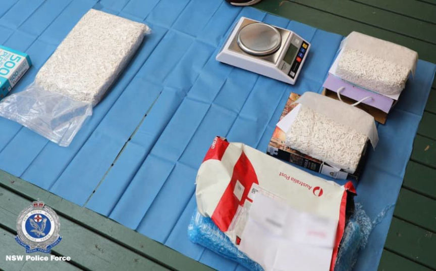
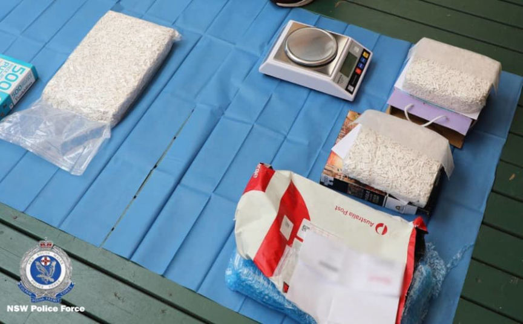

Three Sentenced to Prison in VanillaSurf Case
~2 min read | Published on 2022-01-30, tagged Darkweb-Vendor, Sentenced using 411 words.
Three Manchester men were sentenced to prison for their roles in distributing large quantities of a wide variety of drugs through the darkweb.

The North West Regional Organised Crime Unit (NWROCU) announced that Andrew Moores, Paul Gregory, and Austin “Ozzy” Beckett were sentenced to prison for selling drugs on the darkweb. The defendants pleaded guilty to money laundering and a conspiracy to supply, and export class A and B controlled drugs last year. Through the username “VanillaSurf,” among others, the trio sold cocaine, ecstasy, ketamine, amphetamine, and cannabis.
Investigators with the Metropolitan Police started investigating the vendor account “Vanilla Surf” in November 2019. The Dark Web Operations Team of the NWROCU took control of the investigation after the Encrochat takedown in April 2020. After law enforcement had gained control of the Encrochat network, they learned that three Encrochat users distributed drugs through the Vanilla Surf vendor account as well as “Staxx” and “GovUk.”

The investigators established that Moores had used the EncroChat username “Toxic Jaguar” and was in charge of a drug trafficking operation that distributed drugs through the “Vanilla Surf,” “Staxx,” and “GovUk” vendor accounts. Gregory and Beckett worked for Moores and used the usernames “Matte Soda” and “Real Cake,” respectively, on the Encrochat encrypted network. Beckett was allegedly in charge of the trio’s drug distribution center while Gregory handled packaging and shipping.
The execution of search warrants resulted in the seizure of large quantities of drugs, cash, computers, encrypted mobile phones, and cryptocurrency worth approximately £30,000.
The Manchester Crown Court heard that the investigators found Gregory’s DNA on an ecstasy package ordered by law enforcement officers.
The defendants had earned roughly £3 million via their drug trafficking operation.
They pleaded guilty to conspiracy to supply and export class A and B controlled drugs and money laundering.
Judge John Potter sentenced Moore to 16 years and six months in prison, Gregory to 14 years and four months in prison, and Beckett to 11 years and three months.
archiveiya74codqgiixo33q62qlrqtkgmcitqx5u2oeqnmn5bpcbiyd.onion, archive.is, archive.org
DNL: Police caught Beckett by [i]coincidence[/em], apparently. They were “going to a house in Hazel Grove to arrest someone unconnected” to these defendants. Police claim that Beckett panicked and moved a suitcase from his house to his neighbor’s house. The police, [i]by chance[/em], were interested in Beckett’s neighbor and found the suitcase. It contained “a ’large quantity’ of drugs including high purity cocaine, as well as scales and other drugs paraphernalia.”

Drugs seized during execution of a search warrant.
The North West Regional Organised Crime Unit (NWROCU) announced that Andrew Moores, Paul Gregory, and Austin “Ozzy” Beckett were sentenced to prison for selling drugs on the darkweb. The defendants pleaded guilty to money laundering and a conspiracy to supply, and export class A and B controlled drugs last year. Through the username “VanillaSurf,” among others, the trio sold cocaine, ecstasy, ketamine, amphetamine, and cannabis.
Andrew Moores
Investigators with the Metropolitan Police started investigating the vendor account “Vanilla Surf” in November 2019. The Dark Web Operations Team of the NWROCU took control of the investigation after the Encrochat takedown in April 2020. After law enforcement had gained control of the Encrochat network, they learned that three Encrochat users distributed drugs through the Vanilla Surf vendor account as well as “Staxx” and “GovUk.”
Austin Beckett
The investigators established that Moores had used the EncroChat username “Toxic Jaguar” and was in charge of a drug trafficking operation that distributed drugs through the “Vanilla Surf,” “Staxx,” and “GovUk” vendor accounts. Gregory and Beckett worked for Moores and used the usernames “Matte Soda” and “Real Cake,” respectively, on the Encrochat encrypted network. Beckett was allegedly in charge of the trio’s drug distribution center while Gregory handled packaging and shipping.
Paul Gregory
The execution of search warrants resulted in the seizure of large quantities of drugs, cash, computers, encrypted mobile phones, and cryptocurrency worth approximately £30,000.
The Manchester Crown Court heard that the investigators found Gregory’s DNA on an ecstasy package ordered by law enforcement officers.
Drugs seized by police during a search of Beckett's house.
The defendants had earned roughly £3 million via their drug trafficking operation.
They pleaded guilty to conspiracy to supply and export class A and B controlled drugs and money laundering.
Judge John Potter sentenced Moore to 16 years and six months in prison, Gregory to 14 years and four months in prison, and Beckett to 11 years and three months.
archiveiya74codqgiixo33q62qlrqtkgmcitqx5u2oeqnmn5bpcbiyd.onion, archive.is, archive.org
DNL: Police caught Beckett by [i]coincidence[/em], apparently. They were “going to a house in Hazel Grove to arrest someone unconnected” to these defendants. Police claim that Beckett panicked and moved a suitcase from his house to his neighbor’s house. The police, [i]by chance[/em], were interested in Beckett’s neighbor and found the suitcase. It contained “a ’large quantity’ of drugs including high purity cocaine, as well as scales and other drugs paraphernalia.”